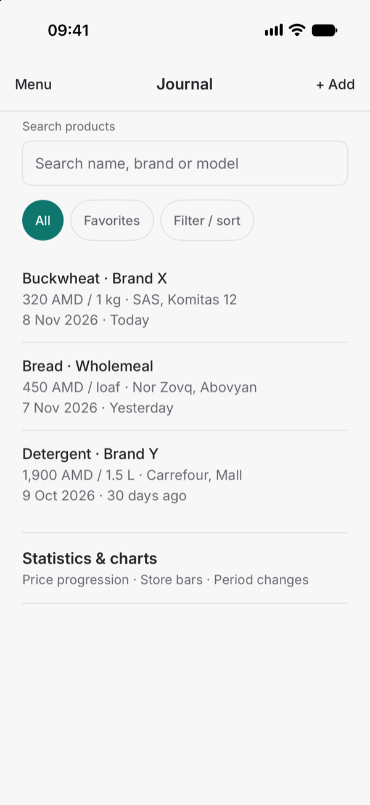
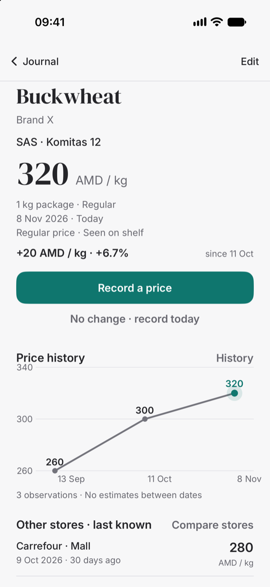
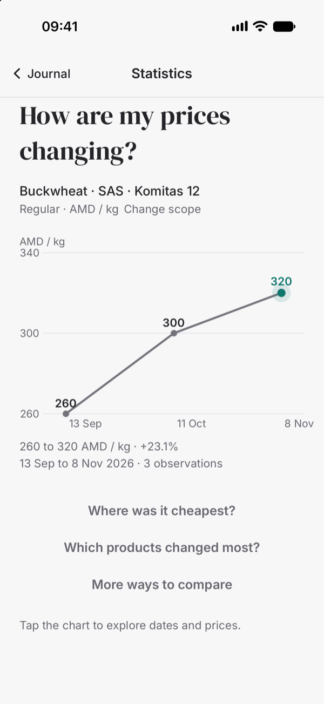
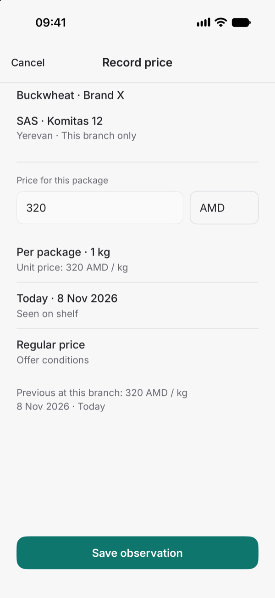
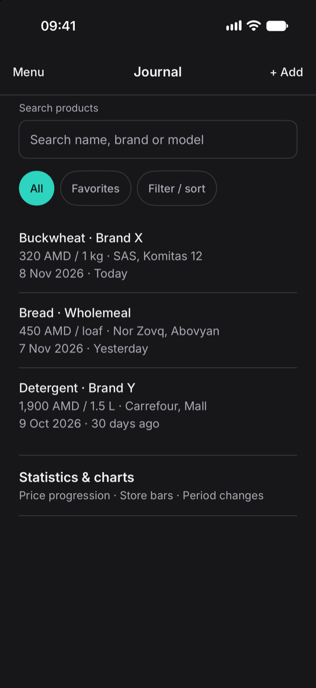
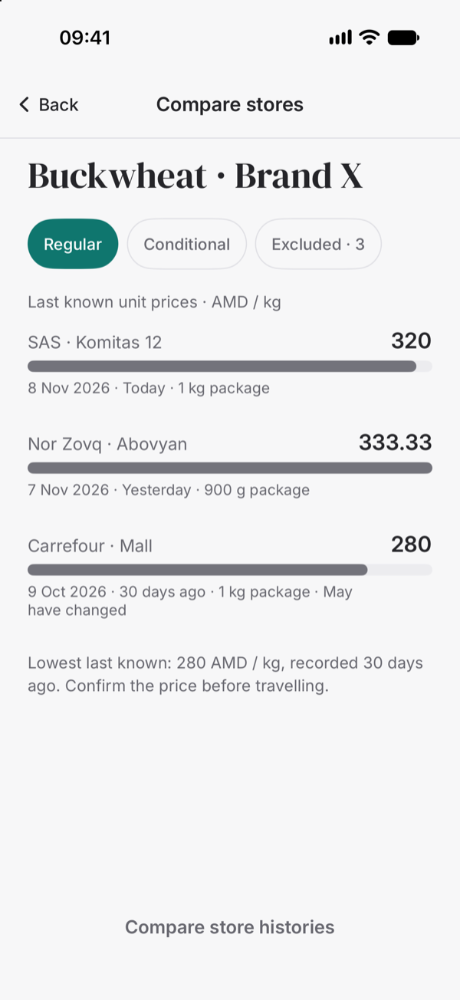
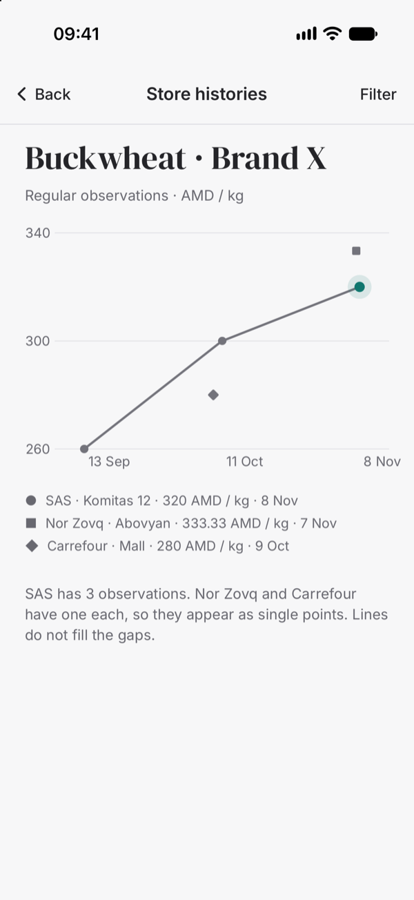

Record in seconds
Keep the selected product and branch, default to today, and suggest the previous package size. No change records today’s observation in one tap, with Undo.
Private price journal · iPhone & iPad
Record a shelf price or what you paid at the shops you actually use. Over time you build a history you can trust: your own observations, with dates, stores, package sizes, and conditions attached.

Most price apps want a login, a store connection, or a subscription. Pricemori is deliberately manual. You decide what is worth tracking, and a shelf label is enough.
Keep the selected product and branch, default to today, and suggest the previous package size. No change records today’s observation in one tap, with Undo.
Only the same product, store, currency, and conditions are compared. Weight, volume, and item prices are normalized before anything is called cheaper.
A compact chart on every product, with the latest observation highlighted. Lines connect recorded points only — no daily estimates or forecasts.
Full JSON backup, spreadsheet-ready CSV export, validated merge, and safe replacement that requires a safety copy first.
No account, no cloud, no scraping, no analytics, and no network requests. Your journal stays on your device with SwiftData.
Every feature is available without a purchase. Six optional one-time tips support development and unlock nothing.
One product at a time
The product screen keeps the latest observation, its date and age, the package details, and the conditions that applied. A card price or a multi-buy offer is recorded as such, not mixed into a regular ranking.

Statistics & charts
Price over time, store comparisons, branch histories, period changes, and package-versus-unit charts all work from your observations. If there is no comparable entry, Pricemori says so instead of guessing.

Recording
The record form keeps the context you already chose: product, branch, currency, and package size. Add the amount, confirm the date, and save. If the shelf price has not changed, one tap records today’s observation without retyping anything.

The journal follows the system appearance and Dynamic Type. Nothing is uploaded, and backups leave the app only when you export them.


